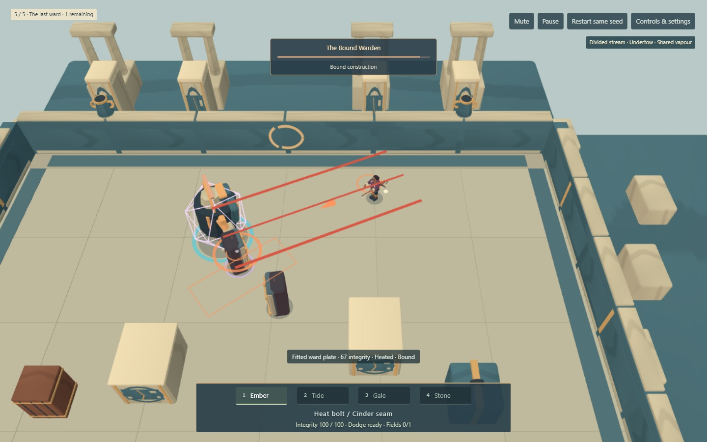
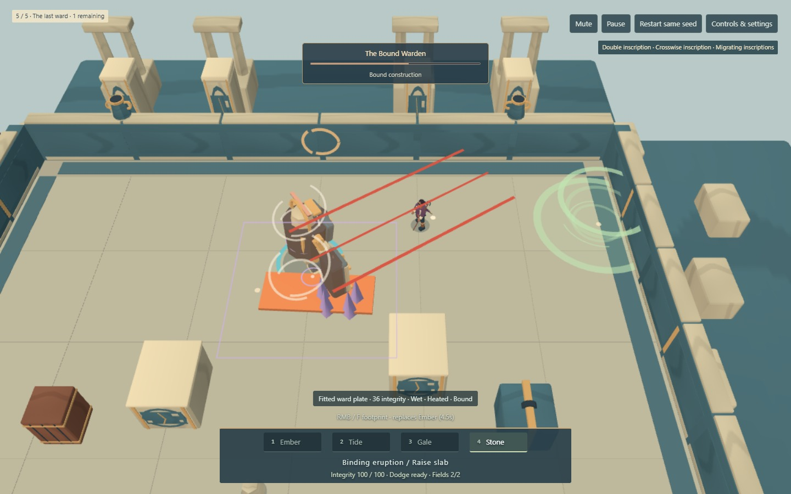
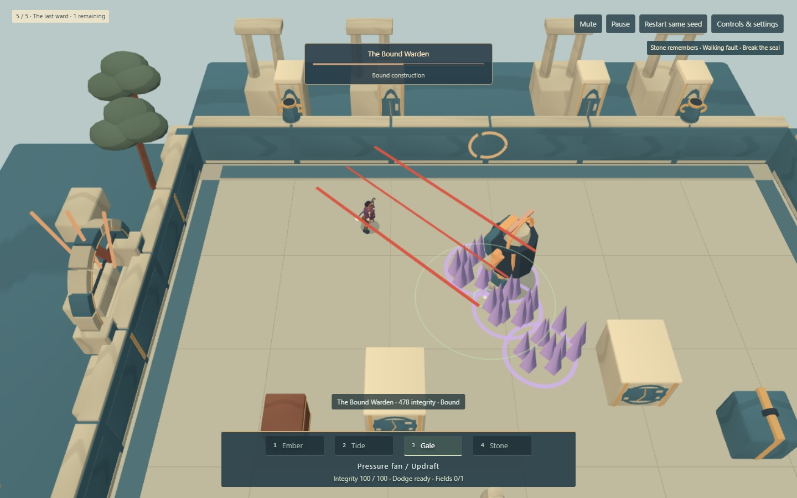

The Bound Warden
Play the complete Broken Court run · Face the Warden directly
A constructed Guardian with two fitted ward plates. Watch the shard lanes, leave its committed march, and read the furnace ring. Heat, moisture, bindings, cover and force obey the same rules as the rest of the court.
These are actual keyboard/mouse fights at normal health against active AI, in the same final arena. The isolated scene starts with a labelled three-upgrade fixture; it does not fake the spell effects. Complete solo and two-client runs with real personal reward choices are tested separately. No concept imagery.
Gather and transform
Divided stream / Undertow / Shared vapour

Move the battlefield
Double inscription / Crosswise / Migrating inscriptions

Prepare and release
Stone remembers / Walking fault / Break the seal

Structure rewards repeated ground placement and release of bindings. Field play maintains and redirects two inscriptions. Reaction play gathers wet targets and heats them; Shared vapour remains a weakly supported payoff, despite visible transfers. Strong Basin/Ember play also remains viable. Scripted comparisons are not human skill models or proof of balance.
Runtime 9dd14b9dcd8f. Installed headless Chrome 152, Intel UHD ANGLE / D3D11, 1440×900 viewport, Lightweight 1152×720 buffer. Recorded on one Windows computer; recording overhead is excluded from the separate performance report. Local two-client tests do not validate another laptop or the remote TURN path.
WASD move · pointer aims · LMB/J Primary · RMB/F/K Secondary · 1–4 or Tab/Q select · Space dodge · hold E near a downed partner. Create co-op, share the room code, then both Ready. New run changes the seed; Retry same seed repeats offers given the same choices.